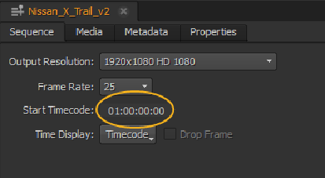
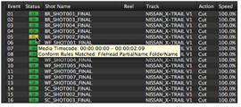
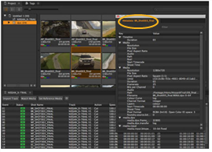

您可以轻松调整单个或多个事件时间码:
| 1。 | 选择电子表格中的无效条目。 |
| 2. | 在中双击 Src 在 列。 |
| 3. | 根据需要调整时间码。你可以进入 绝对 或 相对 时间码值: |
• 绝对 -绝对时间码包含八位数字，并指定事件的新时间码，而不考虑当前时间码。
|
例子 |
结果 |
|
01: 05: 43: 21 |
将时间码设置为 1 小时、 05 分钟、 43 秒和 21 帧 |
|
01054321 |
• 相对 -用途 和 - 相对于当前值更改时间码的值。您也可以使用 h , m ,和 s 表示小时、分钟和秒。
|
当前位置 |
例子 |
结果 |
|
01: 05: 43: 21 |
1 小时 |
02: 05: 43: 21 |
|
110 |
01: 05: 42: 11 |
|
|
10000 |
01: 06: 43: 21 |
|
|
-6 m |
00: 59: 43: 21 |
媒体将状态更改为
 .
.
注意: 默认情况下，时间线从 01: 00 开始，但是您可以使用 序列 面板。

如果你不确定时间码应该是什么，你可以:
• 将鼠标悬停在电子表格中的目标条目上，以查看时间码工具提示。

OR
• 检查 bin 剪辑的元数据并计算正确的 Src 在 :
| 1。 | 右键单击所需条目并选择 项目视图 . |
| 2. | 在垃圾箱中的剪辑上单击鼠标右键，然后选择 打开 > 元数据视图 ,或按 Alt + D . |
选定的剪辑元数据显示在浮动窗格中。

|
|